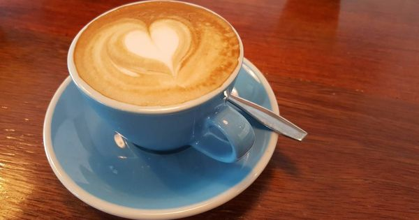
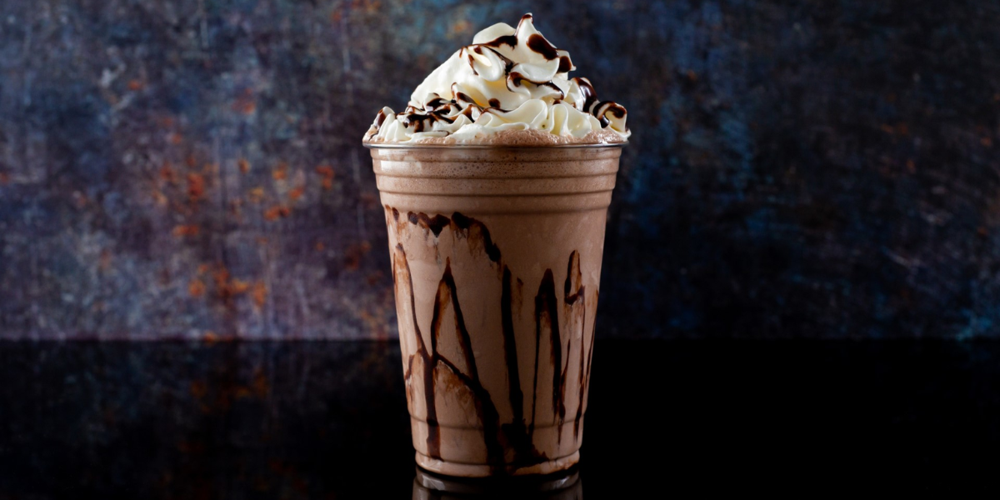

cafe
El café con leche es una de las bebidas más comunes que incluyen café. Consta básicamente de dos ingredientes: café (como infusión) y leche, con una proporción que varía de acuerdo a las costumbres locales, pero ronda la mezcla por partes iguales.
te
preparada a partir de un gramo de hoja de té y 100 mL de agua caliente, provee aproximadamente 250-350 mg de material sólido, constituido por 35-45% de catequinas (en sus diversos grados de polimerización) y un 6% de cafeína.

granizados
Para los amantes del café quienes necesitan refrescarse, este granizado de café Nescafé se convertirá en la bebida favorita en días calurosos.